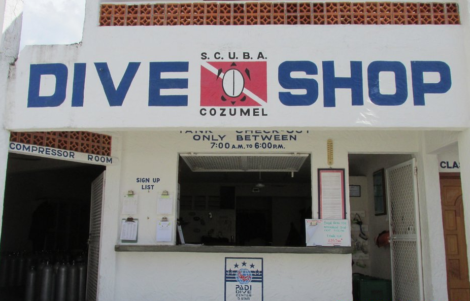
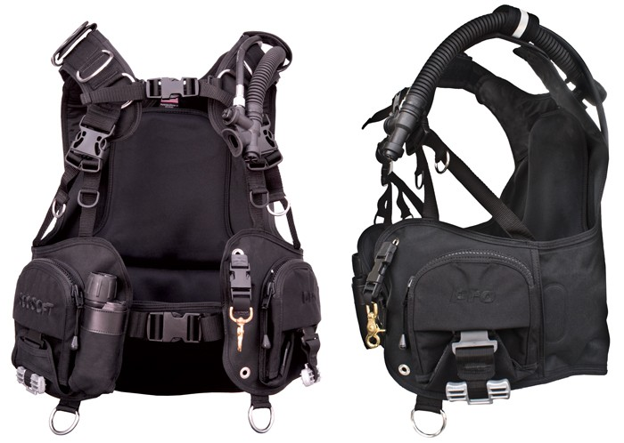
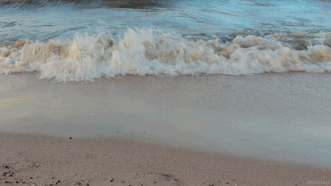
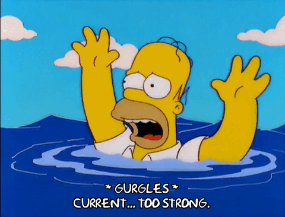

You decide to go to Cozumel.
As you arrive to the terminal, a man wearing large sunglasses holds a sign with your name on it.
You approach him and ask "What is going on?"
He responds, "Aqui esta tu paquete, y buena suerte." and hands over a package before disappearing into the crowd.
Inside the package is a map of Cozumel, a pair of car keys, and directions to a diveshop.
You arrive to the dive shop.

The instructions say you must figure out how to complete three dives in a 24 period, including a dive of 80 feet.
You have never learned to swim, not to mention scuba-dive.
And you are aware of the dangers of an air embolism, when one or more gas bubbles enter a vein or artery.

Do you
face your fears or
back out?
You are too afraid of drowning and decide not to back out. You recieve a phone call. A recording tells you your loved one has died."
Click here to play again.
You decide to dive, despite your fear of drowning.
You try your best to follow the directions of the scuba instructor.
You first put the tank on the seat and sit down.
Next, you buckle the Boyuncy Control vest and put the regulator in your mouth.


Then, you pull on your fins and mask.
Holding the regulator and mask with one hand, you use your other hand to push backwards into the open water.
As you descend headfirst into the Palancar Reef, you can see the blue abyss of the ocean.
A Bluefin tuna swims past at 45mph, reflecting the light of the sea.

The farther down you go, the reef appears darker, and less colorful.
You can hear yourself breathing.
Before you realize it, you are already 80 feet deep. The instructor gives you a thumbs-up, a signal to return to the surface.
As you get back into the boat, you are unsure if you can make another dive. The combination of fear and jet lag left you exhausted.
The instructor reminds you to meet back in two hours for a 50-foot dive.
You fall asleep right there on the sand.

The instructor wakes you up, hands you a weight-belt, and says "We are going to Santa Rosa".
You somehow mangage to get up and climb into the Zodiac.
The boat moves into the horizon.


The instructor throws an anchor into the water and the two of you dive in.
He immediately swims towards the reef. As you approach it, the colors and shape of the Santa Rosa reef become more defined, and the oceans diversity overwhelms you.
 About 20 minutes into the dive, the intructor signals to follow after a sea turtle.
About 20 minutes into the dive, the intructor signals to follow after a sea turtle.
You decide to Get lost in the ocean or follow after the wild sea creature.
You follow after the instrutor, who is holding onto the turtles shell and prompting you do the same.
In a dreamlike state, you grab with on one hand at the top, and the other at the bottom.
Without notice, the instructor lets his hands go as you are being pullled at high speed to the surface.
You snap back to reality and let the turtle go. You swim back to the Zodiac.
\
After a meal and a few hours rest, it is time for the final dive; a night dive in Chankanaab.
The lagoon opens up to the ocean, illuminated by the blue bioluminescence and moonlight.
\
The instructor waits for you on the pier with two tanks, ready to go.
\ For the last time, he hands over the weight belt.
\ Suddenly, you realize that he is the same man who gave you the package and wished you good luck.
\ You switch on your flashlight, feeling oddly at ease, and join him in the lagoon.
\
You choose not to follow after the turtle. Not knowing where you are, you decide to resurface. Unable to find your way, the current pulls you to the Carribean sea. Eventually you drown.
Click here to play again.

You decide not to dive. As you walk out of the shop, the phone rings again. You answer and hear the scream, followed by a shot.
Click here to play again.
After 20 minutes pass, you head back to the surface.
As you walk out from the lagoon, you see your loved one waiting for you by the shore. The three of you sit on the sand and watch hundreds of newly-hatched baby turtles crawl their way into the sea.
Click here to play again.